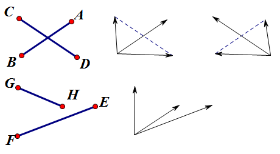

Project Euler 165
题目
Intersections
A segment is uniquely defined by its two endpoints.
By considering two line segments in plane geometry there are three possibilities: the segments have zero points, one point, or infinitely many points in common.
Moreover when two segments have exactly one point in common it might be the case that that common point is an endpoint of either one of the segments or of both. If a common point of two segments is not an endpoint of either of the segments it is an interior point of both segments.
We will call a common point \(T\) of two segments \(L_1\) and \(L_2\) a true intersection point of \(L_1\) and \(L_2\) if \(T\) is the only common point of \(L_1\) and \(L_2\) and \(T\) is an interior point of both segments.
Consider the three segments \(L_1, L_2\), and \(L_3\):
\(L_1: (27, 44)\) to \((12, 32)\)
\(L_2: (46, 53)\) to \((17, 62)\)
\(L_3: (46, 70)\) to \((22, 40)\)
It can be verified that line segments \(L_2\) and \(L_3\) have a true intersection point. We note that as the one of the end points of \(L_3\): \((22,40)\) lies on \(L_1\) this is not considered to be a true point of intersection. \(L_1\) and \(L_2\) have no common point. So among the three line segments, we find one true intersection point.
Now let us do the same for \(5000\) line segments. To this end, we generate \(20000\) numbers using the so-called "Blum Blum Shub" pseudo-random number generator.
\(\begin{aligned} s_0 &= 290797 \\ s_{n+1} &= s_n\times s_n (\mathrm{modulo\ } 50515093) \\ t_n &= s_n (\mathrm{modulo\ } 500) \\ \end{aligned}\)
To create each line segment, we use four consecutive numbers \(t_n\). That is, the first line segment is given by:
\((t_1, t_2)\) to \((t_3, t_4)\)
The first four numbers computed according to the above generator should be: \(27, 144, 12\) and \(232\). The first segment would thus be \((27,144)\) to \((12,232)\).
How many distinct true intersection points are found among the \(5000\) line segments?
解决方案
这个问题包含了两个子问题。
第一个子问题：给定线段\(AB\)和\(CD\)，判断它们是否存在真交点。
如果线段\(AB\)和线段\(CD\)存在真交点，那么必须满足：点\(A\)和点\(B\)严格地分别处在直线\(CD\)两侧，并且点\(C\)和点\(D\)严格地分别处在直线\(AB\)两侧（如下图），这启发我们使用叉积来解决。

用数学语言描述来说：如果\((\overrightarrow{BC}\times \overrightarrow{BA}) \cdot(\overrightarrow{BD}\times \overrightarrow{BA})<0\)并且有\((\overrightarrow{DA}\times\overrightarrow{DC})\cdot(\overrightarrow{DB}\times \overrightarrow{DC})<0\)，那么线段\(AB\)和\(CD\)是有真交点的。
第二个子问题：求线段\(AB\)和\(CD\)的真交点坐标，因为题目要求交点需要去重。
如果已知两点\((x_0,y_0),(x_1,y_1)\)，那么可以直接确定两点式方程\(Ax+By=C\)。其中： \[A=y_1-y_2,B=x_2-x_1,C=x_1(y_1-y_2)-y_1(x_1-x_2)\]
确定了两条直线\(l_1,l_2\)的方程\(A_1x+B_1y=C_1,A_2x+B_2y=C_2\)后，直接解出真交点即可。
这里自定义了一个分数类，用于规避浮点数的误差，所以代码效率可能会比较低。
代码
1 |
|